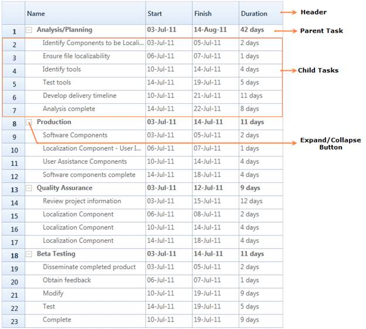

Gantt Grid is a table view control which displays the scheduled tasks/activities of the project with its hierarchy. You can edit the fields of the bounded tasks using this grid.

Figure 8: Gantt Grid
· Header – Header represents the table header which contains the field name of the task.
· Parent Task – Parent task represents the summary of the child tasks. This is an activity which will be further splitted into various child tasks.
· Child Task – Child task reprents an individual task. This contains only the information about the specific task. The Child task is a part of parent task.
· Expand/Collapse Button – Expand/Collapse button allows you to expand or collapse the particular hierarchy.